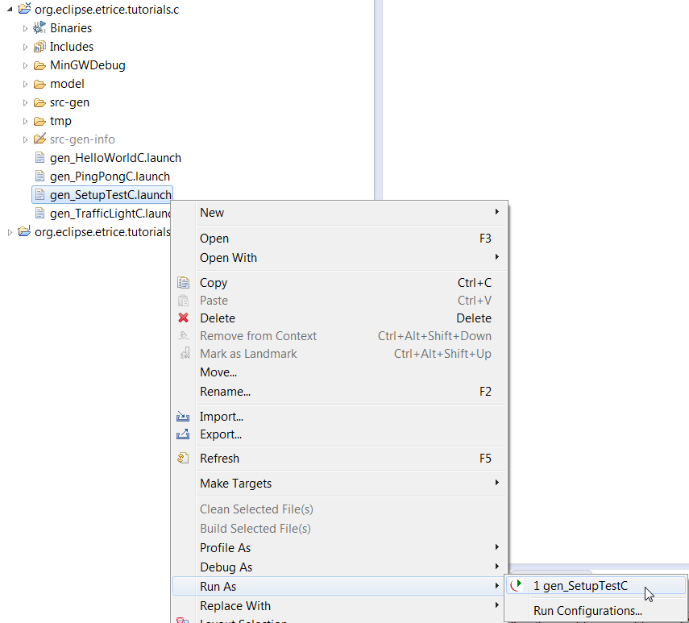

Objectives for this tutorial:
Before you can start with C, some preconditions must be fulfilled:
After installation of eTrice in Eclipse, your workspace should look like this (note the eTrice item in the main menu):
Select the menu File->New->Other

Open the eTrice folder and select eTrice C Runtime
Press Next and Finish to install the Runtime into your workspace.

Do the same steps for eTrice C Modellib, eTrice C Tutorials and eTrice Trafficlight for Tutorials. To avoid temporary error markers you should keep the proposed order of installation. The resulting workspace should look like this:
To check the correct setup of your workspace we run a little test project contained in the tutorial project.
The tutorial models are available in the org.eclipse.etrice.tutorials.c project. All tutorials are ready to generate and run without any changes. To test the code generator and the workspace setup simply run gen_SetupTestC.launch as gen_SetupTestC:

The successful generation ends with Info: – finished code generation in the Console.

For each tutorial in the folder src-gen a sub folder is generated which contains the generated code. The file <...>_Runner.c contains the main function. To run the generated application you first have to compile the project (with the hammer symbol in the C/C++ Perspective).
Caution: make sure to choose the correct build configuration for your environment.

If the compilation does not succeed, make sure to clean and compile the projects org.eclipse.etrice.runtime.c and org.eclipse.etrice.modellib.c with the correct build configuration for your platform. Depending on the setup of your C compiler and CDT you might have to change the predefined build configurations MinGWDebug or PosixDebug.
After the successful compilation you can run the application as Local C/C++ Application.
If the binaries are not detected by CDT then in the project properties go to C/C++ Build > Settings > Binary Parsers and select "PE Windows Parser" (for Windows) or "GNU Elf Parser" (for Linux/Unix). Then the binary will be detected.
If this still doesn’t help then an alternative is to create a C/C++ launch configuration manually and enter the path to the executable.

To terminate the application type quit in the console window. If your Console contains the lines
your setup should be ok.

Now the workspace is set up and you can perform the tutorials or start with your work.